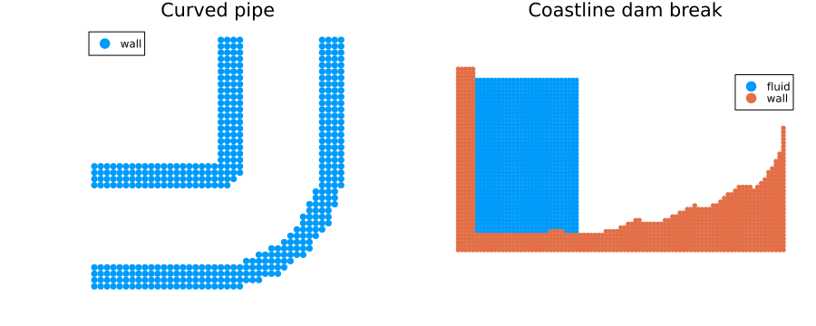

Setting up a 2D simulation from geometry files
In this tutorial, we build two 2D setups from geometry files:
- a curved pipe, where one geometry file defines the outer wall and another defines the channel cut out of it,
- a dam-break basin with a coastline profile, where one geometry file defines the coastline wall and the seawall on the right.
We use 2D geometry formats such as .asc or .dxf for 2D setups. STL files describe surfaces and are therefore better suited to 3D setups.
First, we import TrixiParticles.jl together with OrdinaryDiffEqLowStorageRK of OrdinaryDiffEq.jl and Plots.jl.
using TrixiParticles
using OrdinaryDiffEqLowStorageRK
using PlotsResolution
We use the same particle spacing for the fluid and for the wall geometries.
particle_spacing = 0.03
fluid_density = 1000.0
gravity = 9.81
sound_speed = 10.0
state_equation = StateEquationCole(; sound_speed, reference_density=fluid_density,
exponent=7)Loading 2D geometry files
The following helper loads a closed 2D geometry file and samples particles in its interior:
- load the polygon with
load_geometry, - fill the polygon with
ComplexShape.
This creates a filled 2D solid region rather than particles only along the polygon edges.
function solid_from_geometry_file(file; particle_spacing, density)
geometry = load_geometry(file)
solid = ComplexShape(geometry; particle_spacing, density,
grid_offset=0.5particle_spacing)
return (; geometry, solid)
endsolid_from_geometry_file (generic function with 1 method)A curved pipe from two filled geometries
The pipe wall is an L-shaped solid region with a channel cut out of it:
- one geometry file describes the outer pipe envelope,
- one geometry file describes the empty channel,
setdiffsubtracts the channel from the solid envelope.
pipe_outer_file = pkgdir(TrixiParticles, "examples", "preprocessing", "data",
"curved_pipe_outer_2d.asc")
pipe_channel_file = pkgdir(TrixiParticles, "examples", "preprocessing", "data",
"curved_pipe_channel_2d.asc")
pipe_outer = solid_from_geometry_file(pipe_outer_file; particle_spacing,
density=fluid_density)
pipe_channel = load_geometry(pipe_channel_file)
pipe_setup = (; wall=setdiff(pipe_outer.solid, pipe_channel),
outer_geometry=pipe_outer.geometry,
channel_geometry=pipe_channel)(wall = InitialCondition{Float64, Float64}(), outer_geometry = Polygon{2, Float64}(), channel_geometry = Polygon{2, Float64}())A dam-break basin with a coastline profile
In the second setup, one 2D geometry file defines the coastline wall: the beach profile, a finite wall thickness below it, and the seawall on the right.
coast_file = pkgdir(TrixiParticles, "examples", "preprocessing", "data",
"coastline_profile_2d.asc")
coast = solid_from_geometry_file(coast_file; particle_spacing, density=fluid_density)(geometry = Polygon{2, Float64}(), solid = InitialCondition{Float64, Float64}())The geometry file defines the coastline bed and right wall as a solid region. We add the left wall as a rectangular particle block and place a rectangular dam-break water column beside it.
left_wall = RectangularShape(particle_spacing, (5, 50), (0.0, -0.12),
density=fluid_density)
reservoir = RectangularShape(particle_spacing, (28, 42), (0.15, 0.03),
acceleration=(0.0, -gravity),
state_equation=state_equation)
coast_setup = (; geometry=coast.geometry,
wall=union(coast.solid, left_wall),
fluid=setdiff(reservoir, coast.geometry))
p_pipe = plot(pipe_setup.wall, label="wall", title="Curved pipe",
markerstrokewidth=0, markersize=4)
plot!(p_pipe, showaxis=false, aspect_ratio=:equal,
xlims=(-0.03, 1.23), ylims=(-0.03, 1.23))
p_coast = plot(coast_setup.fluid, coast_setup.wall,
labels=["fluid" "wall"], title="Coastline dam break",
markerstrokewidth=0, markersize=3)
plot!(p_coast, showaxis=false, aspect_ratio=:equal,
xlims=(0.0, 2.75), ylims=(-0.15, 1.35))
plot(p_pipe, p_coast, layout=(1, 2), size=(900, 360))
Building the simulation systems
We continue with the coastline setup. The remaining steps are the same as for other 2D simulations.
setup = coast_setup
tspan = (0.0, 0.03)We define the state equation, smoothing kernel, and viscosity for the weakly compressible SPH simulation.
smoothing_length = 1.2 * particle_spacing
smoothing_kernel = SchoenbergCubicSplineKernel{2}()
viscosity = ArtificialViscosityMonaghan(alpha=0.02, beta=0.0)
fluid_density_calculator = ContinuityDensity()
density_diffusion = DensityDiffusionMolteniColagrossi(delta=0.1)
fluid_system = WeaklyCompressibleSPHSystem(setup.fluid;
density_calculator=fluid_density_calculator,
state_equation, smoothing_kernel,
smoothing_length, viscosity=viscosity,
density_diffusion=density_diffusion,
acceleration=(0.0, -gravity))For the wall, we reuse the combined solid wall particles created above. The high-level constructor obtains the smoothing kernel, smoothing length, and state equation from the fluid.
boundary_model = BoundaryModelDummyParticles(setup.wall; fluid_system)
boundary_system = WallBoundarySystem(setup.wall, boundary_model)Semidiscretization
We construct the Semidiscretization from the fluid and boundary systems.
semi = Semidiscretization(fluid_system, boundary_system)
ode = semidiscretize(semi, tspan)Time integration
We can now solve the problem. An InfoCallback prints progress during the simulation.
callbacks = CallbackSet(InfoCallback(interval=10))For more accurate body-fitted particles around sharper features, you can also apply the particle packing workflow to the 2D geometry files before starting the simulation.
This page was generated using Literate.jl.